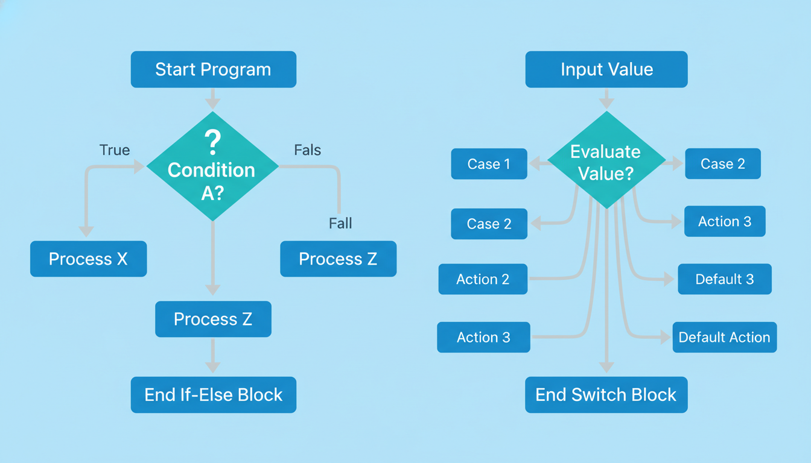

Логічні вирази та оператори порівняння
Логічний вираз — це вираз, результатом якого є значення типу bool: true (істина) або false (хибність).
Оператори порівняння (реляційні):
| Оператор | Опис | Приклад | Результат |
|---|---|---|---|
== | Дорівнює | 5 == 5 | true |
!= | Не дорівнює | 5 != 3 | true |
> | Більше | 5 > 3 | true |
< | Менше | 5 < 3 | false |
>= | Більше або дорівнює | 5 >= 5 | true |
<= | Менше або дорівнює | 5 <= 3 | false |
Логічні оператори:
| Оператор | Опис | Приклад |
|---|---|---|
&& | Логічне І (AND) | (a > 0) && (a < 10) |
|| | Логічне АБО (OR) | (a < 0) || (a > 100) |
! | Логічне НЕ (NOT) | !(a == 0) |
Таблиця істинності:
| A | B | A && B | A || B | !A |
|---|---|---|---|---|
| true | true | true | true | false |
| true | false | false | true | false |
| false | true | false | true | true |
| false | false | false | false | true |
Не плутайте оператор присвоєння = з оператором порівняння ==! Запис if (a = 5) присвоїть a значення 5 і завжди буде істинним, тоді як if (a == 5) правильно перевірить, чи дорівнює a п'яти.
Оператор if (якщо)
Оператор if дозволяє виконати блок коду тільки за певної умови.
if (умова) {
// блок коду, що виконується, якщо умова істинна (true)
}#include <iostream>
using namespace std;
int main() {
int age;
cout << "Введіть ваш вік: ";
cin >> age;
if (age >= 18) {
cout << "Ви повнолітній!" << endl;
}
if (age < 18) {
cout << "Ви неповнолітній." << endl;
}
return 0;
}Оператор if-else
Оператор if-else дозволяє вибрати одну з двох альтернатив: виконати блок if, якщо умова істинна, або блок else, якщо умова хибна.

if (умова) {
// блок коду, якщо умова true
} else {
// блок коду, якщо умова false
}#include <iostream>
using namespace std;
int main() {
int number;
cout << "Введіть число: ";
cin >> number;
if (number % 2 == 0) {
cout << "Число " << number << " є парним." << endl;
} else {
cout << "Число " << number << " є непарним." << endl;
}
return 0;
}Вкладені умовні оператори
Умовні оператори можуть бути вкладеними один в одного — блок if або else може містити інші умовні оператори.
#include <iostream>
using namespace std;
int main() {
int a, b, c;
cout << "Введіть три числа: ";
cin >> a >> b >> c;
int max;
if (a > b) {
if (a > c) {
max = a;
} else {
max = c;
}
} else {
if (b > c) {
max = b;
} else {
max = c;
}
}
cout << "Максимум: " << max << endl;
return 0;
}else завжди відноситься до найближчого попереднього if, що не має свого else. Для уникнення плутанини використовуйте фігурні дужки {} навіть для однієї інструкції.
Ланцюжок if-else-if
Для перевірки кількох взаємовиключних умов використовується ланцюжок if-else-if.
#include <iostream>
using namespace std;
int main() {
int score;
cout << "Введіть бал (0-100): ";
cin >> score;
if (score >= 90) {
cout << "Оцінка: Відмінно (A)" << endl;
} else if (score >= 80) {
cout << "Оцінка: Добре (B)" << endl;
} else if (score >= 70) {
cout << "Оцінка: Задовільно (C)" << endl;
} else if (score >= 60) {
cout << "Оцінка: Нижче середнього (D)" << endl;
} else {
cout << "Оцінка: Незадовільно (F)" << endl;
}
return 0;
}Оператор switch (множинний вибір)
Оператор switch дозволяє вибрати одну з кількох альтернатив на основі значення виразу. Він зручний, коли потрібно порівняти змінну з низкою константних значень.
switch (вираз) {
case константа1:
// інструкції
break;
case константа2:
// інструкції
break;
// ... інші case
default:
// інструкції за замовчуванням
}#include <iostream>
using namespace std;
int main() {
int day;
cout << "Введіть номер дня тижня (1-7): ";
cin >> day;
switch (day) {
case 1:
cout << "Понеділок" << endl;
break;
case 2:
cout << "Вівторок" << endl;
break;
case 3:
cout << "Середа" << endl;
break;
case 4:
cout << "Четвер" << endl;
break;
case 5:
cout << "П'ятниця" << endl;
break;
case 6:
cout << "Субота" << endl;
break;
case 7:
cout << "Неділя" << endl;
break;
default:
cout << "Невірний номер дня!" << endl;
}
return 0;
}Особливості switch:
- Вираз у
switchмає бути цілочисельним, символьним або перерахуванням - Значення
caseмають бути константами - break — вихід з switch. Без break виконання "провалюється" до наступного case
- default — виконується, якщо жоден case не підходить
Приклад з "провалюванням" (fall-through):
char grade;
cout << "Введіть оцінку (A-F): ";
cin >> grade;
switch (grade) {
case 'A':
case 'B':
case 'C':
cout << "Зараховано!" << endl;
break;
case 'D':
case 'F':
cout << "Не зараховано." << endl;
break;
default:
cout << "Невірна оцінка." << endl;
}Тернарний оператор (? :)
Тернарний (триадичний) оператор — це скорочена форма запису if-else для простих виразів. Має формат:
умова ? вираз_якщо_true : вираз_якщо_false;int a = 10, b = 20;
int max = (a > b) ? a : b; // max = 20
// Еквівалент:
int max;
if (a > b) {
max = a;
} else {
max = b;
}
// Вкладений тернарний оператор
int sign = (x > 0) ? 1 : (x < 0) ? -1 : 0;Тернарний оператор зручний для простих присвоєнь, але не зловживайте вкладеними тернарними операторами — вони роблять код важким для читання. Для складних умов використовуйте if-else.
📝 Тести для самоперевірки
💻 Практичні завдання
Напишіть програму, яка визначає найбільше та найменше з трьох введених чисел, використовуючи вкладені if.
Напишіть програму, яка зчитує два числа та символ операції (+, -, *, /, %) і виконує відповідну операцію. Обробіть ділення на нуль.
Напишіть програму, яка перевіряє, чи є рік високосним. Рік високосний, якщо він ділиться на 4, але не ділиться на 100, або ділиться на 400.
Напишіть програму, яка перевіряє, чи можна побудувати трикутник з трьох заданих сторін. Якщо так — визначте його тип (рівносторонній, рівнобедрений, різносторонній).
Напишіть програму, яка перевіряє, чи є тризначне число паліндромом (читається однаково зліва направо і справа наліво).
Напишіть програму з меню: 1 — Цельсій→Фаренгейт, 2 — Фаренгейт→Цельсій, 3 — Цельсій→Кельвін. Використайте switch.
Напишіть програму, яка за номером дня у році (1-365) та роком визначає місяць та день місяця. Врахуйте високосний рік.
Напишіть програму для розрахунку вартості квитка: діти до 6 років — безкоштовно, 6-18 — 50% знижка, 18-60 — повна ціна, 60+ — 30% знижка.
Напишіть програму, яка розміщує три введені числа у порядку зростання без використання масивів та циклів.
Напишіть програму, яка обчислює ІМТ = маса(кг)/ріст²(м) та виводить категорію: недовага(<18.5), норма(18.5-25), зайва вага(25-30), ожиріння(>30).